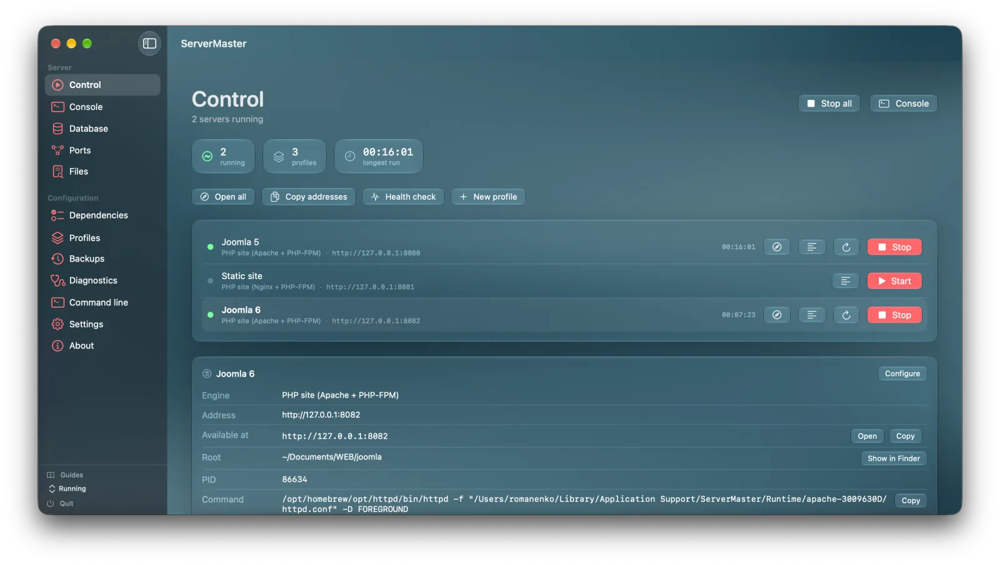
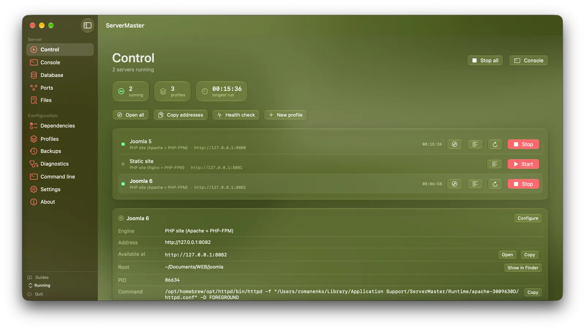
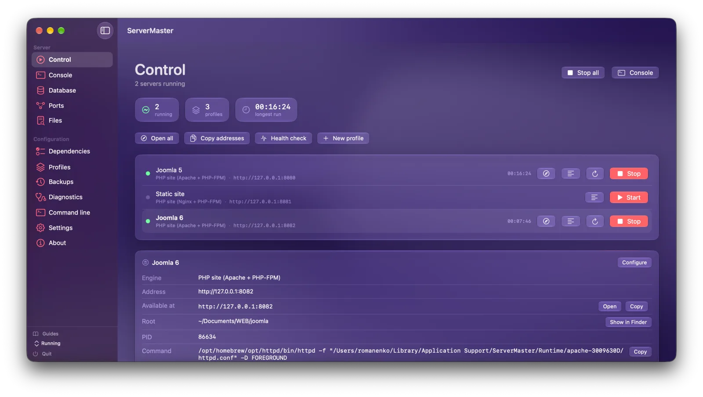
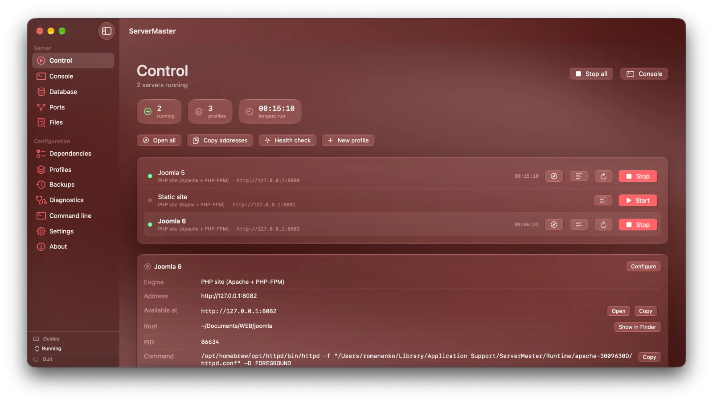
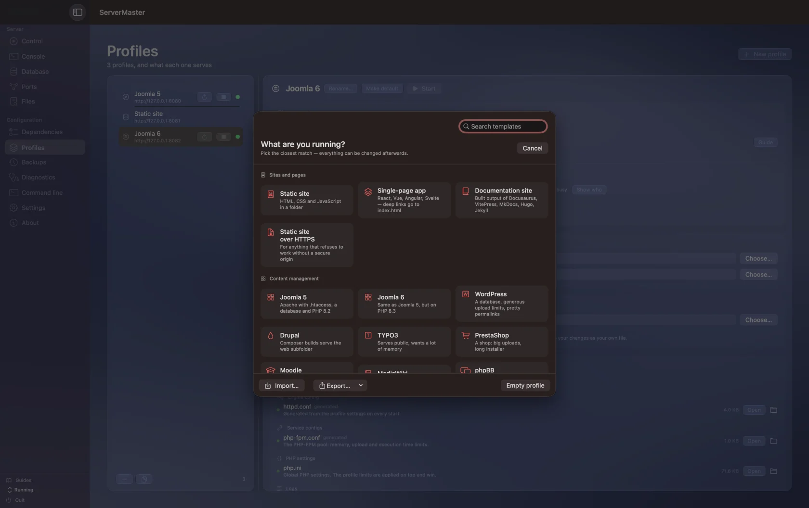
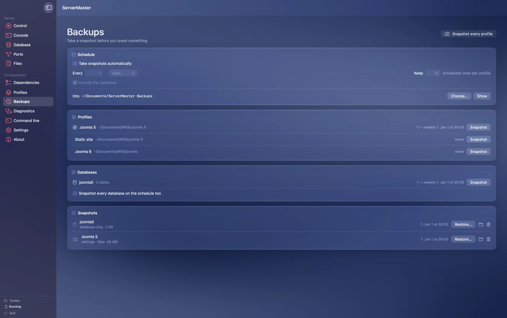
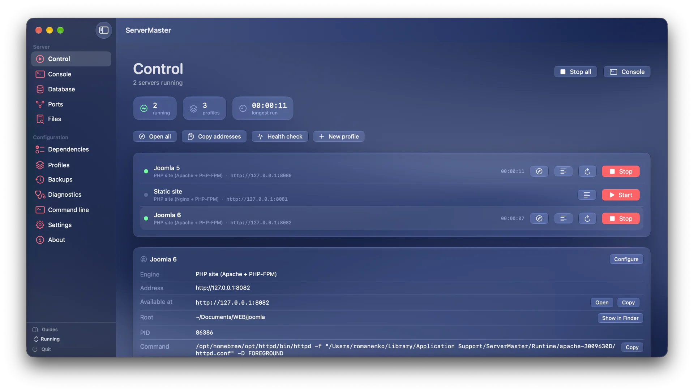

Open the appDefault profile starts
Pick up where you build.
Choose a default profile and enable autostart. Your server starts with the app, with an option to open its address in your browser.
IN DEVELOPMENT New capabilities arrive release by release
Build your project. Let ServerMaster handle the routine.
Local servers, databases, and everyday automation — in one focused workspace.
Free & open source · Releases ship when they are ready · Every published version stays available




SET IT ONCE
A workspace that remembers how you work. Capabilities land progressively as each release is completed.
Choose a default profile and enable autostart. Your server starts with the app, with an option to open its address in your browser.
Enable restart on crash to automatically attempt another start after an unexpected exit. Keep the logs close when a problem needs your attention.
Choose what to snapshot, how often, and how many copies to keep. Scheduled snapshots run while ServerMaster is open.
22 profile templates, from a static folder to a PHP CMS. Pick a starting point and fine-tune the details. Joomla 5 and 6 can be downloaded and unpacked through the setup wizard.

Save project files and settings, include your running managed database, and restore what you need. Keep manual snapshots beside your scheduled copies.

A BETTER EVERYDAY WORKFLOW
The difference is what you have to keep in your head. Choose a task to compare a manual workflow with ServerMaster.
Your settings are spread across commands, folders, and memory.
Folder · Engine · Port · PHP version · Browser preference
Configure the profile once. Reuse it whenever you return.
Illustrative workflows, not performance benchmarks. Setup depends on your project and installed dependencies.
| Everyday task | Managed by hand | With ServerMaster |
|---|---|---|
| Project settings | Remember or copy command arguments | Reusable profiles and templates |
| Several local sites | Keep track of separate processes | Individual controls in one workspace |
| Backups | Archive files and export the database | Snapshots with a schedule and retention |
| Troubleshooting | Switch between logs and process tools | Server logs, ports, diagnostics, and HTTP checks |
NATIVE. THROUGH AND THROUGH.
The overview when you need it. The details when you want them. Screens show current development work; downloadable features depend on the selected release.

Start and stop profiles independently, open their addresses, and inspect their status.
A native Swift interface with menu bar controls, widgets, and a Safari extension in active development.
10 engine modes. Per-profile settings. The freedom to use familiar tools or bring a custom command.
MIT-licensed source, versioned releases, and downloadable snapshots. Follow the project as it grows.
START BUILDING
One project, different ways to work. Download an available release or see what is planned for your platform.
Loading available releases…
Browse every published release on GitHub
The published 1.0 Universal build includes both Apple Silicon and Intel. A separate Intel-only legacy line is planned for later; it does not have a downloadable release yet.
A FEW GOOD QUESTIONS
The screenshots show active development work. The download section identifies the exact published version you will receive; features can differ between releases and platforms.
ServerMaster manages local tools. Depending on your engine, you may need PHP, Node.js, Nginx, Caddy, or other dependencies. The app checks what is available and provides installation controls.
The current release is unsigned and not notarized. Download it from the official GitHub release, then follow that release's first-launch instructions in System Settings → Privacy & Security.
Yes. Published builds stay in GitHub Releases. The release archive includes application downloads, source snapshots, and checksums where available. New releases can be added without replacing older entries.
The Swift CLI is being developed as a shared codebase for macOS and Linux, with Linux glibc and musl builds planned. A native Windows interface is also planned. The platform picker will show downloads when those releases exist.